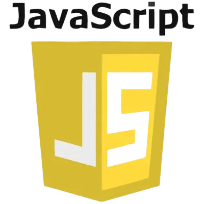
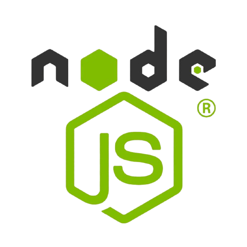

This is a landing page created
for the odin project. The Odin Project
is a free, open-source curriculum designed
to teach web development, providing a
comprehensive path for beginners to become
full-stack developers. It emphasizes practical,
hands-on learning through projects and real-world
applications, covering HTML, CSS, JavaScript, Git,
Node.js, databases, and more.
Tools used in Odin


"Programming isn't about what you know;
it's about what you can figure out. It's
the courage to face problems you don't yet
understand, the persistence to push through
challenges that seem insurmountable, and the
curiosity to explore solutions you haven't
tried. Great programmers are not those who
never fail, but those who are relentless in
their pursuit of improvement and never stop learning."